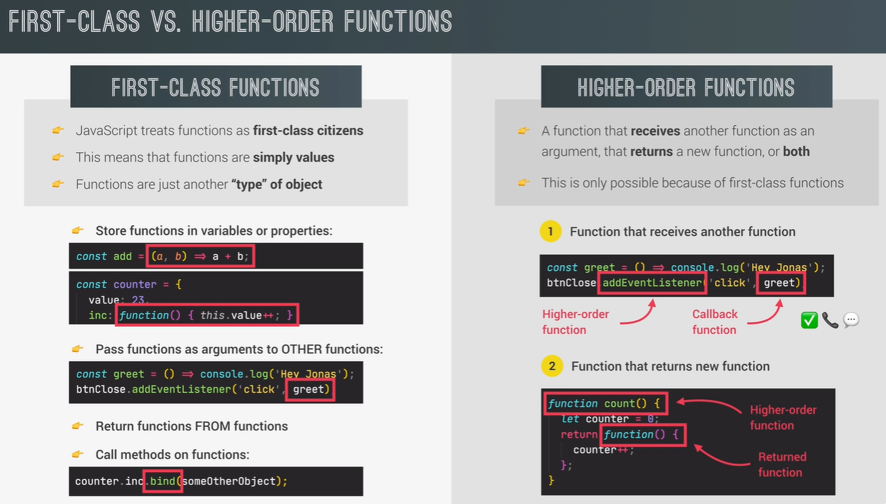

This page contains my notes from the following books and lectures:
a) Eloquent JavaScript by Marijn Haverbeke
b) Udemy course on JavaScript
a) Eloquent JavaScript by Marijn Haverbeke
b) Udemy course on JavaScript
Index for Book:
Chapter 13: JavaScript and the Browser
Chapter 14: The Document Object Model
Index for Udemy Course:
Module 2 - JavaScript Fundamentals Part 1
Module 3 - JavaScript Fundamentals Part 2
Module 5 - Developer Skills and Editor Setup
Module 6 - HTML and CSS Crash Course
Module 7 - JS in the Browser: DOM and Event Fundamentals
Module 8 - How JS works behind the scenes
Module 9 - Data Structures, Modern Operators, and Strings
Module 10 - A closer look at functions
Module 11 - Working with Arrays
Module 13 - Advanced DOM and Events
Chapter 13: JavaScript and the Browser
- The tags are wrapped in
< >. - The document starts with
<!doctype html > , which tells the browser to interpret the
page
as modern HTML, as opposed to various dialects that were in use in the past. - An HTML Element is started by an opening tag like
<p> and ended by a closing tag
like
</p>. - Some opening tags, such as the one for the link (
<a>), contain extra information in the
form of
name="value" pairs. These are called attributes. - Some kinds of tags do not enclose anything and thus do not need to be closed. The metadata tag
<meta charset="utf-8"> is an example of this. - This SO Link goes into the differences between tags, elements, and attributes.
- The
- Such a script will run as soon as its
- The
- A script tag must always be closed with
- Some attributes can also contain a JavaScript program. The
<script> tag allows us to include a piece of JavaScript in the document.
<script> tag is encountered while the browser
reads the HTML. - The
<script> tag can be given an src attribute to fetch a script file (a
text file containing a JavaScript program) from a URL.
<script>, even if it refers to a script file
and doesn't contain any code. If you forget this, the rest of the page will be interpreted as part of the
script. - Some attributes can also contain a JavaScript program. The
<button> tag (which shows up
as a button) has an onclick attribute. The attribute's value will be run whenever the button is
clicked.
Chapter 14: The Document Object Model

- The global binding (other name for variable)
document gives us access to these
objects. Its documentElement property refers to the object representing the
<html> tag.- You can think of the DOM as a tree datastructure with the
document.documentElement serving as
the root of the tree. Just like a normal tree, the root is a node. A node can have children nodes
or can have leaves. - Each DOM node object has a
nodeType property, which contains a code (number) that identifies
the type of node. Elements have code 1, which is also defined as the constant property
Node.ELEMENT_NODE. Text nodes, representing a section of text in the document, get code 3
(Node.TEXT_NODE). Comments have code 8 (Node.COMMENT_NODE). - What is the difference between Node object and Element object? This SO Link explains.
Element inherits from Node, in the same way that Dog
inherits from Animal.
An Element object "is-a" Node object, in the same way that a Dog object "is-a"
Animal object.- Every node has a
parentNode property that points to the node it is part of, if any. Likewise,
every element node (node type 1) has a childNodes property that points to an array-like object
holding its children. - The
firstChild and lastChild properties point to the first and last child
elements or have the value null for nodes without children. - Similarly,
previousSibling and nextSibling point to adjacent nodes, which are
nodes with the same parent that appear immediately before or after the node itself. For a first child,
previousSibling will be null, and for a last child, nextSibling will be null. - There's also the
children property, which is like childNodes but contains
only element (type 1) children, not other types of child nodes. This can be useful when you aren't
interested in text nodes. - The
nodeValue property of a text node holds the string of text that it represents.
- If we want the
- All element nodes have a
- To find a specific single node, you can give it an
- A third, similar method is
href attribute of the link in that document, we can say:
getElementsByTagName method, which collects all elements with the
given tag name that are descendants (direct or indirect children) of that node and returns them as an
array-like object. - To find a specific single node, you can give it an
id attribute and use
document.getElementById instead. - A third, similar method is
getElementsByClassName, which, like
getElementsByTagName, searches through the contents of an element node and retrieves all
elements that have the given string in their class attribute.
- Almost everything about the DOM data structure can be changed. The shape of the document tree can be
modified by changing parent-child relationships. Nodes have a
- Consider the following:
- A node can exist in the document in only one place. Thus, inserting paragraph Three in front of paragraph
One will first remove it from the end of the document and then insert it at the front, resulting in
Three/One/Two. All operations that insert a node somewhere will, as a side effect, cause it to be removed
from its current position (if it has one).
- The
remove method to remove them from
their current parent node. To add a child node to an element node, we can use appendChild,
which puts it at the end of the list of children, or insertBefore, which inserts the node
given as the first argument before the node given as the second argument. - Consider the following:
- The
replaceChild method is used to replace a child node with another one. It takes as
arguments two nodes: a new node and the node to be replaced. The replaced node must be a child of the
element the method is called on. Note that both replaceChild and insertBefore
expect the new node as their first argument.
Module 2 - JavaScript Fundamentals Part 1
Section 2: JavaScript Fundamentals, Part 1
- JS can be included in your HTML code in 2 ways - either inline or by pointing to an external js file.
- Inline js is when it is included in the .html page itself within
- In the below image we have moved the js to an external file. Now when we load the index.html page, the values from the js file are logged into the console. The console also shows the corresponding file and line number that corresponds to the line that is logging the values. The variables that are present in the js file, are also in-scope in the console window in the browser. So you can access variables such as js and firstName in the console and change their values as required.

- Errors that are present in your js file will appear on the console as follows:
 - Javascript has dynamic typing. Hence we do not have to manually define the datatype of the value stored in
the variable. The data types are determined automatically by javascript. This distinction is important - a
variable simply holds a value and it is the value that determines the type. This
also means that you can assign a different data type to the same variable in your code.
- Javascript has dynamic typing. Hence we do not have to manually define the datatype of the value stored in
the variable. The data types are determined automatically by javascript. This distinction is important - a
variable simply holds a value and it is the value that determines the type. This
also means that you can assign a different data type to the same variable in your code.
- The
- You can check the operator precedence on MDN website here. 21 is the highest value of precedence.
- In JS, we have Type Conversion and Type Coercion. Type conversion is when we manually convert variables from one type to another. Type coercion is when JS automatically converts the types for us, ie. it is an implicit conversion that is hidden from us.
- In 2009, ES5 (ECMA Script 5) was released. In 2015, ES6/ES2015 (ECMAScript 2015) was released. In 2015, the release cycle changed to an annual release cycle. So a anew version of JS is released every year.
- You can check the entire compatibility of various JS versions here in this table.
- ES5 is full supported in all browsers, right down to IE9 from 2011. ES6+ is supported in all modern browsers. ES6+ includes all JS version from 2015-2020. Future releases of JS are known as ESNext. These are from 2021 onwards.
- Inline js is when it is included in the .html page itself within
<script> tags like:
<script>alert("Hello World")</script> tags. Pointing to an external js is done as
follows:
<script src = "script.js"><script> i.e. specify the location of the js file. Here
it means that the script.js file is in the same folder as the html file. - In the below image we have moved the js to an external file. Now when we load the index.html page, the values from the js file are logged into the console. The console also shows the corresponding file and line number that corresponds to the line that is logging the values. The variables that are present in the js file, are also in-scope in the console window in the browser. So you can access variables such as js and firstName in the console and change their values as required.
- Errors that are present in your js file will appear on the console as follows:
- The
typeof operator is used to find out the type of the variable. - You can check the operator precedence on MDN website here. 21 is the highest value of precedence.
- In JS, we have Type Conversion and Type Coercion. Type conversion is when we manually convert variables from one type to another. Type coercion is when JS automatically converts the types for us, ie. it is an implicit conversion that is hidden from us.
- In 2009, ES5 (ECMA Script 5) was released. In 2015, ES6/ES2015 (ECMAScript 2015) was released. In 2015, the release cycle changed to an annual release cycle. So a anew version of JS is released every year.
- You can check the entire compatibility of various JS versions here in this table.
- ES5 is full supported in all browsers, right down to IE9 from 2011. ES6+ is supported in all modern browsers. ES6+ includes all JS version from 2015-2020. Future releases of JS are known as ESNext. These are from 2021 onwards.
Module 3 - JavaScript Fundamentals Part 2
Lecture 32: Activating Strict Mode
- Add
'use strict' at the top of the js file in order to activate strict mode. This stops JS
from failing silently, and instead generates errors in the console when certain errors occur.
Lecture 34: Function Declarations vs Expressions
- There are 3 types of ways in which you can declare functions:
a) Function Declaration
b) Function Expression
c) Arrow Function
 - Remember that the arrow function does not have the
- Remember that the arrow function does not have the
a) Function Declaration
b) Function Expression
c) Arrow Function
this scope. More on this later.
Module 5 - Developer Skills and Editor Setup
Lecture 56: Installing Node.js and setting up a dev env
- Check if npm is already installed in your IDE using:
- Install live-server by running
- Launch the web page by running
npm -v - Install live-server by running
npm install live-server -g - Launch the web page by running
live-server. Now you will not have to reload the page every
time you make changes to see if the changes took effect or not. Lecture 61: Debugging with the Chrome Console and Break Points
- In Chrome, you can go to the Sources tab and view the debugger. You can set breakpoints, check the values
of the variables, everything that you want.
- Alternatively, you could also write down
- Alternatively, you could also write down
debugger; anywhere in your js code, and then the
code would automatically switch over to the debugger when that particular line is reached. Module 6 - HTML and CSS Crash Course
Lecture 64: Basic HTML Structure and Elements
- Elements, Tags, Attributes, Classes, IDs
- In HTML, some Elements can have attributes. These attributes describe elements.
- For example, consider the following anchor element.
- An
- Similarly you have the
- There are two attributes that we can use on ALL elements. These are class and id. These attributes are used to name the HTML elements so that we can style them using CSS. We also use them to select elements from JS when we are doing DOM Manipulation.
- The difference between classes and ids is that ids are supposed to be unique. That is, you can only use an id ONCE, on a page.
- A
- A
- In HTML, some Elements can have attributes. These attributes describe elements.
- For example, consider the following anchor element.
<a href="https://github.com/rgbk21">My Github</a>. Here href is an
attribute of the <a> tag because it defines the link to which the anchor
element should point to. - An
<a> is also known as an inline element because the text contained within the
<a> tags are displayed in-line. Contrast this with something like the <p> tag where
the text is displayed on a different line. Such an element is known as a Block Element. - Similarly you have the
<img src="https://github.com/rgbk21"</> element. An
img element does not have a closing tag. - There are two attributes that we can use on ALL elements. These are class and id. These attributes are used to name the HTML elements so that we can style them using CSS. We also use them to select elements from JS when we are doing DOM Manipulation.
- The difference between classes and ids is that ids are supposed to be unique. That is, you can only use an id ONCE, on a page.
- A
<div> element is used to draw a box on the HTML page. - A
<form> element is used to accept input from the user. <form> is
just a <div> that has been given some semantic meaning to explain to HTML that we intend
to take an input from the user. Lecture 66: Basic Styling with CSS
- We use the
-
- Consider the following HTML File and the CSS associated with it:
<link> tag to link an HTML file to a CSS file. This line is supposed to go
in the <head> of the HTML page. -
<link href="styles.css" rel="stylesheet">. This code assumes that the CSS file is in
the
same folder as the HTML file. - Consider the following HTML File and the CSS associated with it:
Lecture 67: Introduction to the CSS Box Model
- According to the box model in CSS, each and every element on a web page can be seen as a rectangular box.
- The CSS file corresponding to the HTML in the section above:
Module 7 - JS in the Browser: DOM and Event Fundamentals
Lecture 71: What is the DOM and DOM Manipulation
- The DOM and DOM Methods like
- The HTML corresponding to the below JS can be seen here. This is not the functioning JS. It is more for your reference about how to use different aspects of the language.
- This is the Complete JS for the ImageGallery page here.
- TODO: How does the CSS on the Pig Game actually work?
- This is the Complete JS for the Pig Game page here.
document.querySelector() are NOT a part of the JS language.
Instead, they are a part of the Web APIs. The Web APIs are libraries that the browser implements - and we
can access these libraries through our JS code. These web APIs are also written in JS. There is a separate
DOM specification that each browser implements. Just like DOM, there are other Web APIs as well, like -
Timers, Fetch, etc. - The HTML corresponding to the below JS can be seen here. This is not the functioning JS. It is more for your reference about how to use different aspects of the language.
- This is the Complete JS for the Pig Game page here.
Module 8 - How JS works behind the scenes
Lecture 89: A High-Level overview of JS
- JS is:
- High Level Language: In languages like C, you have to manage the memory yourself. High-level languages abstract away the memory management (apart from doing other things).
- Garbage Collected: One of the tools that takes memory management away from developers is automatic garbage collection.
- Interpreted or Just-In-Time (JIT) Compiled:
- Multi Paradigm: Paradigm refers to a style of writing code. This can be imperative or declarative. JS can support multiple styles of writing code, such as, Procedural (organizing code in a very linear way so that the code runs top-to-bottom with functions in between), Object-Oriented, Functional
- Prototype-based Object-Oriented:
- First-Class functions: functions are treated as regular variables, i.e., we can pass them into other functions, and return them from functions. This is what enables functional programming in JS.
- Dynamically typed: In JS we do not assign datatypes to variables. The dataytpes are known only once JS
engine executes our code. Also the type of variables can easily be changed by reassigning variables.
- Single-Threaded: JS runs in one single thread.
- Non-Blocking Event-Loop: Long running tasks are executed by the event loop in the "background" and then put back in the main thread once their execution is complete.
- High Level Language: In languages like C, you have to manage the memory yourself. High-level languages abstract away the memory management (apart from doing other things).
- Garbage Collected: One of the tools that takes memory management away from developers is automatic garbage collection.
- Interpreted or Just-In-Time (JIT) Compiled:
- Multi Paradigm: Paradigm refers to a style of writing code. This can be imperative or declarative. JS can support multiple styles of writing code, such as, Procedural (organizing code in a very linear way so that the code runs top-to-bottom with functions in between), Object-Oriented, Functional
- Prototype-based Object-Oriented:
- First-Class functions: functions are treated as regular variables, i.e., we can pass them into other functions, and return them from functions. This is what enables functional programming in JS.
- Single-Threaded: JS runs in one single thread.
- Non-Blocking Event-Loop: Long running tasks are executed by the event loop in the "background" and then put back in the main thread once their execution is complete.
Lecture 90: JS Engine and RunTime
- JS Engine is, simply put, the code that executes the JS code. Every browser has it's own JS engine. The
most well-known JS engine is Google's V8. The V8 engine powers Google Chrome, but also nodeJS. Other
browsers have their own JS engines.
- A JS engine contains a call stack and a heap. The Call Stack is where our JS code is executed using something known as the Execution Context. The heap is an unstructured memory pool that stores all the objects that our application needs.
- What is the
difference between Compiled language vs an Interpreted Language on SO.
- Before the code can be run by the target system (think your laptop CPU), it needs to be converted to machine code (sequence of 0s and 1s). So your JS code has to be converted to machine code. Now how is this going to happen? Compilation is the process by which the entire source code (your code) is converted into machine code at once, and written to a binary file that can be executed on any computer. Any application that you run your machine has been already previously compiled into a binary executable.
An interpreted language, on the other hand, consists of an interpreter that runs through the source code and
executes it line-by-line. So, basically, the code is read and executed at the same time. JS used to be an
interpreted language, but modern JS isn't. This is primarily because interpreted languages are slow, and JS
couldn't keep up with the development of the browser.
- Modern JS uses a combination of Compilation and Interpretation, which is known as Just-In-Time (JIT)
compilation.
- TODO: I still don't understand what is actually happening with the JIT Compilation.
- The first step is parsing the code that reads the JS code and converts it into a datastructure known as the AST (Abstract Syntax Tree). The compilation process takes the generated AST and converts it into machine code. This machine code is executed right away because of the JIT compilation of JS. The machine code that is generated initially is a very un-optimised version of the code just so that the execution can begin as soon as possible. In the background, the machine code is taken and recompiled while the program is already executing. During each iteration of the optimisation, the unoptimised code is swapped for the optimised code - all while the program is already executing!!
- A JS Runtime is something that is required to run JS in the browser. It is a combination of JS Engine
(discussed above), the Web APIs, and the Callback Queue. The Callback Queue is a datastructure that contains
all the callback functions that are ready to be executed. What are callback functions? The functions that
you attached to the event listeners are known as callback functions. So when an event happens - like a click
- the corresponding callback function will be called.
- This is how it happens - when a user clicks on a
button, the callback function is added to the callback queue. Then, once the call stack is empty, the
callback function is passed to the call stack so that it can be executed. This happens by something known as
the Event Loop. The event loop picks up functions from the callback queue and places them in the call stack
so that they can be executed. The event loop is basically how javascript's non-blocking concurrency model is
implemented.
- Remember that JS can also exist outside of browsers (nodeJS). In that case, the JS runtime will not
contain the Web APIs, because the Web APIs are provided by the browser. In this case, the WebAPIs are
replaced by C++ bindings and the thread pool.
- A JS engine contains a call stack and a heap. The Call Stack is where our JS code is executed using something known as the Execution Context. The heap is an unstructured memory pool that stores all the objects that our application needs.
- Before the code can be run by the target system (think your laptop CPU), it needs to be converted to machine code (sequence of 0s and 1s). So your JS code has to be converted to machine code. Now how is this going to happen? Compilation is the process by which the entire source code (your code) is converted into machine code at once, and written to a binary file that can be executed on any computer. Any application that you run your machine has been already previously compiled into a binary executable.
- The first step is parsing the code that reads the JS code and converts it into a datastructure known as the AST (Abstract Syntax Tree). The compilation process takes the generated AST and converts it into machine code. This machine code is executed right away because of the JIT compilation of JS. The machine code that is generated initially is a very un-optimised version of the code just so that the execution can begin as soon as possible. In the background, the machine code is taken and recompiled while the program is already executing. During each iteration of the optimisation, the unoptimised code is swapped for the optimised code - all while the program is already executing!!
Lecture 91: Execution Contexts and the Call Stack
- Once the code is code is compiled and ready to be executed, a Global Execution Context is created
for the top level code. Top-level code here means any code that is not inside any function.
- For example, the name variable is a part of the top-level code. Hence it will be executed in the Global execution Context. Then we have two functions - one expression and one declaration. These functions will be declared so that they can be called later. The point is that - the code inside the function will be executed only when the function is called.
- An Execution Context is defined as an environment in which a piece of JS code is executed. The context stores all the necessary information that is required by a code to be executed - such as local variables or arguments passed to a function.
- In every JS project, there is only one global execution context and this global execution context is where the top level code executes.
- Now that we have a top-level execution context, we can begin execution of the code. For each function in
the code, a new execution context is created that contains all the necessary information that that
particular function requires to run. The same also goes for methods because they are just functions
attached to objects. All these execution contexts together make up the call stack. Once all the functions
have been executed, the JS Engine will wait for the callback function to arrive so that it can begin
executing those.
- What is inside an Execution Context:Variable Environment: This environment stores all the variables and the function declarations.
Apart
from this, it also stores a special object called the
Scope Chain: Apart from the local variables defined inside the function, the Execution Context
can also
access variables that are defined outside the function. The scope chain consists of references to
variables that are outside the current function.
- Recall, as we discussed earlier, the Call Stack with the Memory Heap forms the JS Engine. The Call Stack is the place where the Execution Contexts get stacked on top of each other to keep track of where we are in the execution. The Execution Context on the top of the stack is the one that is currently running. This Udemy Lecture explains using a code example how JS makes use of the Call Stack and the Execution Context to execute the code.
- For example, the name variable is a part of the top-level code. Hence it will be executed in the Global execution Context. Then we have two functions - one expression and one declaration. These functions will be declared so that they can be called later. The point is that - the code inside the function will be executed only when the function is called.
- An Execution Context is defined as an environment in which a piece of JS code is executed. The context stores all the necessary information that is required by a code to be executed - such as local variables or arguments passed to a function.
- In every JS project, there is only one global execution context and this global execution context is where the top level code executes.
- What is inside an Execution Context:
arguments object. This object
contains all the arguments that were passed into the function that the current Execution Context belongs
to. Remember that each function gets its own execution context as soon as the function is called.
this keyword : One important sidenote is that Execution Contexts belonging to the
arrow
functions do not get their own this keyword or arguments object. Instead, they
use the this and arguments of their nearest normal function parent.
- Recall, as we discussed earlier, the Call Stack with the Memory Heap forms the JS Engine. The Call Stack is the place where the Execution Contexts get stacked on top of each other to keep track of where we are in the execution. The Execution Context on the top of the stack is the one that is currently running. This Udemy Lecture explains using a code example how JS makes use of the Call Stack and the Execution Context to execute the code.
Lecture 92: Scope and the Scope Chain
- Scope controls where you can access a particular variable and where you can't access them.
- JS uses Lexical Scoping, which means that scoping is controlled by the physical placement of functions and blocks in the code.
- In JS, we have 3 types of scope: global scope, function scope, and block scope.
- Note that only variables declared with
- What is the Scope Chain?
- Each function creates it's own scope. Hence, first() and second() get their own scopes.
- Every scope has access to all of the variables from all of its outer/parent scopes. All of this also applies to function
- Note that starting from ES6, the if-block is also able to create it's own scope. But this scope will only work for the ES6 variable types -
- What is the difference between the Scope Chain and the Call Stack?
- The scope of a function is the same as the Variable Environment in the function's Execution Context. Apart from this, the scope also inherits the scope from all of it's parent scopes because of the scope chain that we discussed above.
- The order of function calls has no effect on the scope chain. What I mean by this is, consider the following:
- JS uses Lexical Scoping, which means that scoping is controlled by the physical placement of functions and blocks in the code.
- In JS, we have 3 types of scope: global scope, function scope, and block scope.
- Note that only variables declared with
let or const are restricted to the block
in which they are created. That means that a variable that is declared using a var would be
scoped to the parent function, or else the global scope. Hence, we say that let and
const are block scoped whereas var is function scoped. IN ES5
and earlier versions, we only had global scope and function scope.
- What is the Scope Chain?
- Each function creates it's own scope. Hence, first() and second() get their own scopes.
- Every scope has access to all of the variables from all of its outer/parent scopes. All of this also applies to function
arguments. So this is basically how the Scope Chain works - if one scope
needs to use a variable but is unable to find it in the current scope, it will look up it's scope chain and
see if it can find the variable in one of it's parent scopes. If it can, then it will use that variable. If
it can't, then you get an error. This process is also called variable lookup in scope chain. Note
that a scope cannot look for variables in it's children scopes. - Note that starting from ES6, the if-block is also able to create it's own scope. But this scope will only work for the ES6 variable types -
let and const.
- Take note of the millenial variable in the below figure. The variable is declared with the var
keyword. Hence, it is not scoped to the block, but rather scoped to the parent function, which in this case
is first(). Hence, unlike the decade variable, we see the millenial variable in the
scope of the first() function.
- What is the difference between the Scope Chain and the Call Stack?
- The scope of a function is the same as the Variable Environment in the function's Execution Context. Apart from this, the scope also inherits the scope from all of it's parent scopes because of the scope chain that we discussed above.
- The order of function calls has no effect on the scope chain. What I mean by this is, consider the following:
Lecture 94: Variable Environment - Hoisting and the TDZ
- Hoisting: makes some types of variables accessible/usable in the code before they are actually declared.
In other words, variables are "lifted" to the top of their scope. Behind the scenes, what actually happens
is that, before execution, the code is scanned for variable declarations and for each variable a new
property is created in the variable environment object
- The practical implementations of hoisting is that you can use a variable in the code BEFORE it is actually declared! The value associated with the hoisted variables also varies - refer the table below.
- function declarations are hoisted - this means that these types of functions can be used/called before
they are declared.
- Variables declared with
-
- For function expressions and arrow functions, the hoisting depends on whether they were created using
- There is one another difference between variables declared with a
- The practical implementations of hoisting is that you can use a variable in the code BEFORE it is actually declared! The value associated with the hoisted variables also varies - refer the table below.
- Variables declared with
var are also hoisted, but the hoisting works differently when
compared to functions in the sense that the variables are hoisted, but their value is undefined
and not the value that they are declared with. -
let and const variables are not hoisted. Hence these variables cannot be used
before they are declared. TDZ stands for the Temporal Dead Zone, which is indicating the region in the code
where the variable is in-scope but cannot be used because it has not been declared yet. - For function expressions and arrow functions, the hoisting depends on whether they were created using
var, const, or let. What this means is that function expressions and
arrow functions declared with a var is hoisted, but to undefined. But if they have
been declared using let or const, the functions are not usable before they have
been declared in the code - because of the TDZ. - There is one another difference between variables declared with a
var and let/
const - the variables declared with var are added as properties to the global
window object in JS, whereas the variables declared with let/const
are not.
Lecture 96: The
this keyword
- The
- The value of
- A function can be called in multiple ways.
- A function can be a method - i.e. a function that is present on a object. When we use the
- A function can be called separately - like a usual stand-alone function call. In that case, the
- Arrow functions are not a way to call functions but they still need to be considered. Arrow functions do not get their own
- If the function is called as an event listener, then the
this keyword is a special variable that is created for every Execution Context (i.e. for
each function). We saw earlier that the this keyword is one of the three things that are a part
of the Execution Context that is created for every function. In general terms, the this keyword
takes the value of the "owner" of the function in which the this keyword is used. - The value of
this is not static and varies depending on the way that the function is called.
- A function can be called in multiple ways.
- A function can be a method - i.e. a function that is present on a object. When we use the
this keyword in a method, the this keyword points to the object calling the
method.
- A function can be called separately - like a usual stand-alone function call. In that case, the
this keyword is undefined. But this is only in the case when we are using the
"strict" mode. If we are not using the strict mode, tehn in that case the this keyword is going
to point at the global object, which in this case is the window object. - Arrow functions are not a way to call functions but they still need to be considered. Arrow functions do not get their own
this keyword. Instead, if you use the this keyword in an arrow
function, it is just going to be the this keyword of the surrounding/parent function. - If the function is called as an event listener, then the
this keyword will point to the DOM
Element that the handler function is attached to.
Lecture 98: Regular Functions vs Arrow Functions
- One important point is that arrow functions should never be used as methods on an object. You should
always use function expressions. This is to do with the fact that arrow functions do not get their own
- Another important point is when we have to use functions inside methods.
- Consider the following function inside a method. Why does line 11 print undefined? If you look closely, you can see that the isMillennial function is being called as a simple function call. So, even though the function is within a method, it is still a regular function call. And the rule says that inside a normal function call, the
- One way to get around this problem in solutions prior to ES6 was as follows:
- However, starting form ES6, we can use the arrow function to get around this problem. Recall that the
arrow function does not have the
- TODO: but we are still calling the isMillennial() functio as a normal function inside the gina3 object. Then shouldn't the
- Another thing is the
this keyword, instead they inherit the this keyword from their parent scope. This
can be a source of bugs.
- Consider the following function inside a method. Why does line 11 print undefined? If you look closely, you can see that the isMillennial function is being called as a simple function call. So, even though the function is within a method, it is still a regular function call. And the rule says that inside a normal function call, the
this keyword is undefined.
this keyword of its own and instead inherits the
this keyword of its parent scope. So, we can do this: - TODO: but we are still calling the isMillennial() functio as a normal function inside the gina3 object. Then shouldn't the
this keyword be undefined?
arguments variable that we discussed earlier:
Lecture 99: Primitives vs Reference Types
- Refer the Udemy Lecture here.
Module 9 - Data Structures, Modern Operators, and Strings
Lecture 103: Destructuring Arrays
- Destructuring is a way of unpacking data from an array or an object into separate variables.
Lecture 104: Destructuring Objects
- Similar to destructuring arrays, we can also destructure objects.
Lecture 105: The Spread Operator
- We can use the spread operator to unpack an entire array or objects at once.
Lecture 106: Rest pattern and Rest Parameters
- The Rest pattern is, in a way, the 'opposite' of the spread operator. It uses the same operator, but to
condense multiple values into an array.
Lecture 107: Short Circuiting
- The
- Boolean operators can use any datatype as its operands, they can return any datatype, and they do short-circuiting.
- The OR operator (
- The AND operator (
- We can use the OR operator to set default values.
- We can use the AND operator to execute code in the second operand if the first operand is true.
&& and || operators work very differently in JS when compared to Java. - Boolean operators can use any datatype as its operands, they can return any datatype, and they do short-circuiting.
- The OR operator (
||) will return the first 'truthy' value among all of its operands or
the last value if all of them are 'falsy'. - The AND operator (
&&) will return the first 'falsy' value among all of it's operands
or return the last value if all of them are 'truthy'. - We can use the OR operator to set default values.
- We can use the AND operator to execute code in the second operand if the first operand is true.
Lecture 110: Looping Arrays - The for-of loop
- This is how we can use the new for-of loop in JS.
Lecture 111: Enhanced Object Literals
- An object literal is when you create a new object by using the
{} operator. ES6 introduced 3
new ways in which we can make writing object literals easier.
Lecture 112: Optional Chaining
- The Optional Chaining operator
?. is used to check if variable immediately preceding
the operator exists or not. By 'exists' we mean the nullish concept and not the truthy/false concept. A
value is nullish only if it is either null or undefined. If the variable preceding
the operator is nullish, then the execution of the statement will immediately return with the value of
undefined. Else, the execution will proceed as normal.
Lecture 113: Looping Objects - Object Keys, Values, and Entries
- We can use the for-of operator to loop through either the keys, values, or both keys and values of an
object.
Lecture 115: Sets
- In ES6, two new datastructures were added to JS - Sets and Maps.
- A set is a collection of unique values - there can be no duplicate elements in a set. Hence, sets are often used to remove duplicate elements from an array.
- A set can hold mixed datatypes.
- In the args for the constructor of the set, we can pass in any kind of iterable. Since an array is an iterable, it works. Similarly, if you pass in a single string, that would work as well. The resulting set that would be created would contain the unique characters that are present in the string.
- A set is a collection of unique values - there can be no duplicate elements in a set. Hence, sets are often used to remove duplicate elements from an array.
- A set can hold mixed datatypes.
- In the args for the constructor of the set, we can pass in any kind of iterable. Since an array is an iterable, it works. Similarly, if you pass in a single string, that would work as well. The resulting set that would be created would contain the unique characters that are present in the string.
Lecture 116: Maps
- Just like an object, the data in a map is stored as key-value pairs. The difference between the two is
that in the case of maps, the keys can have any type, whereas in the case of objects, the keys have
to be strings. So maps can have an object, an array, or even another map as a key.
- Note that the insertion order is maintained in maps in JS as mentioned here on SO.
- Note that the insertion order is maintained in maps in JS as mentioned here on SO.
Lecture 117: Maps - Iteration
- Instead of using the
- Similarly, we can use existing maps to convert them into arrays by using the spread operator.
set method to add elements to a map, you can just add the elements all
at once by passing in an array as shown in the example below. This allows us to easily create maps from
existing objects.- Similarly, we can use existing maps to convert them into arrays by using the spread operator.
Lecture 118: Working with Strings
- Here are some examples of working with strings
Module 10 - A closer look at functions
Lecture 126: Default Parameters
- ES6 introduced Default Parameters
Lecture 127: How passing arguments works - Value vs. Reference
- In JS, Primitives are passed by value, and Objects are passed by "copy of a reference".
- Source on SO here.
- Source on SO here.
Lecture 128: First-Class and Higher-Order Functions
- JS has First-Class functions that enables us to write Higher-Order functions. But what does this mean?
- What does JS having 'First-Class Functions' mean?
- It just means that functions are a different 'type' of object in JS. Since objects are values, functions are values too. And since functions are values, they can be stored in variables or even object properties (keys in an object). We have already been doing this so far.
- We can also pass functions as args to other functions. We already did that with
- We can also return a function from another function.
- Finally, since functions are objects, and objects can have methods on them, there can also be function methods.
- What is a Higher-Order Function then?
- A Higher-Order function is either a function that receives a function as an argument, or returns a new function, or both.
-
- Similarly we can have functions that return other functions.
- What does JS having 'First-Class Functions' mean?
- It just means that functions are a different 'type' of object in JS. Since objects are values, functions are values too. And since functions are values, they can be stored in variables or even object properties (keys in an object). We have already been doing this so far.
- We can also pass functions as args to other functions. We already did that with
addEvenListener where we passed in the callback function as an argument . - We can also return a function from another function.
- Finally, since functions are objects, and objects can have methods on them, there can also be function methods.
bind method is an example of that. - What is a Higher-Order Function then?
- A Higher-Order function is either a function that receives a function as an argument, or returns a new function, or both.
-
addEventListener is an example of a higher-order function because it accepts another function
as an arg. - Similarly we can have functions that return other functions.

Lecture 129: Functions accepting Callback Functions
- Higher-Order Function examples and how they are used in JS:
Lecture 130: Functions accepting Callback Functions
Lecture 131: The
call and apply methods
- We can set the
this keyword manually in JS as well.
Lecture 132: The
bind method
- Just like the
- The difference is that, unlike the
- This is especially useful when we have to manually assign the
- Lecture on Udemy here refer.
call and the apply method, the bind method allows us
to set the this keyword for any function call. - The difference is that, unlike the
call and apply methods, bind
does not immediately call the function. Instead it returns a NEW function where the this
keyword is already bound. - This is especially useful when we have to manually assign the
this
keyword in the case of event listeners. Recall for event listeners the callback function should be a
function, and it should not be immediately called. call and apply immediately call
the function. Hence we use the bind method instead.- Lecture on Udemy here refer.
Lecture 134: Immediately Invoked Function Expressions
- Sometimes in JS, we need a function that is only executed once, and never executed again. We need this to
implement something known as aync await.
Lecture 135: Closures
- Refer Udemy
Lecture here.
- Read about closures on MDN here.
- A closure is the combination of a function and the lexical environment within which that function was declared. This environment consists of any local variables that were in-scope at the time the closure was created.
- Any function always has access to the variable environment of the execution context in which the function was created, even after that execution context is gone.
- We can access the closure of a variable by doing:
- And now if look into the console, you will see something like this. Note that when the name of a property
is enclosed in
 - Examples of Closure in use:
- Examples of Closure in use:
- A closure is the combination of a function and the lexical environment within which that function was declared. This environment consists of any local variables that were in-scope at the time the closure was created.
- Any function always has access to the variable environment of the execution context in which the function was created, even after that execution context is gone.
[[ ]], as shown below, it means that the property is an internal property that
cannot be accessed by us through the code.
Module 11 - Working with Arrays
Lecture 141: Simple Array Methods
- Arrays are objects, and as we have seen, objects can have functions of their own that are called methods.
There are several methods that are defined on the array object.
Lecture 142: Looping Arrays using
forEach
- We can loop over arrays using either the
- The difference between the two is that you can use keywords like
for-of loop that we looked at earlier. Or we can use
the forEach loop. - The difference between the two is that you can use keywords like
break and
continue to break out of a
for-of loop, but you cannot do that with a forEach loop. The forEach
loop will be executed for each element in the collection by default.
Lecture 143:
forEach with Maps and Sets
- Similar to arrays,
forEach can also work with maps and sets. Lecture 145: Creating DOM Elements
- There are multiple ways in which we can create and add elements to the DOM.
- Using
- Using
insertAdjacentHTML method is one such way. We will look at other ways later in the
course.
Lecture 147: Data Transformations - map, filter, reduce
- This image shows what each of these methods do on a high level:
Lecture 148: The
map method
- The
- For every element in the original array, the callback function passed into the map method is executed on that element. The result is stored in a new array, and that array is returned as the result.
- A rule of thumb is that the
map method returns a new array. It does not mutate the original array. - For every element in the original array, the callback function passed into the map method is executed on that element. The result is stored in a new array, and that array is returned as the result.
- A rule of thumb is that the
forEach method is used in case you want to produce side-effects.
Use the map method when you want to follow a functional paradigm where you return a new array
and do nto mutate the state of any existing objects.
Lecture 150: The
filter method
- The
- Just like the
filter method is used to return a new array that contains only those elements from the
original array that have passed a specific condition. - Just like the
map method, the filter method also accepts a callback function,
and just like the callback function in the map method, the callback function in the filter
method also accepts three args, namely - currentElement, index, entire array. Lecture 151: The
reduce method
- The
- The callback function that is passed into the
- The
reduce method is used to compute a single value using all the values in the original
array.
- The callback function that is passed into the
reduce method is different compared to the ones
passed nto map or forEach. In the callback for the reduce method, the
first parameter is the accumulator. This accumulator stores the value that will be finally returned
from the reduce function. So, for example, if we are using the reduce method to
calculate the sum of all the elements in an array, then the accumulator would simply return the final
sum. - The
reduce method also accepts a second argument which t=is the starting value of the accumulator.
Lecture 152: The magic of chaining
- How do we debug code that is in the pipeline:
Lecture 155: The
find method
- The
find method returns the element based on the condition that is specified in the
callback function. Note that if multiple elements of the array satisfy the given condition, then in that
case the find method will return the first element that satisfies the condition.
Lecture 158: The
findIndex method
- Returns the index of the first element in the array where predicate is true, and -1 otherwise.
Lecture 159:
some and every method
-
-
some Determines whether the specified callback function returns true for any element of an
array. -
every Determines whether all the members of an array satisfy the specified test. Lecture 160:
flat and flatMap method
-
-
flat Returns a new array with all sub-array elements concatenated into it recursively up to
the specified depth. -
flatMap Calls a defined callback function on each element of an array. Then, flattens the
result into a new array. This is identical to a map followed by flat with depth 1.
The flatMap method calls the callback function one time for each element in the array.
Lecture 161: Sorting Arrays
- Note that the
sort method by default converts everything to strings implicitly. Hence using
the sort method to sort arrays of number swill lead to wrong results. Hence be sure to pass in
a custom comparator when sorting numbers.
Lecture 162: More ways of creating and filling arrays
- Here you go:
Lecture 163: Which array method to use
Module 13 - Advanced DOM and Events
Lecture 182: How DOM really works
-